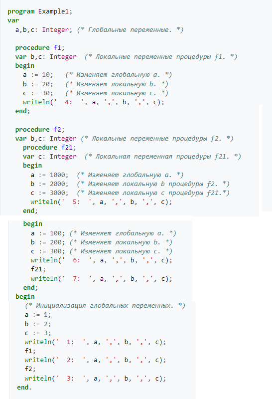

|
Типы области видимости
В монолитной (одномодульной) программе без
вложенных функций и без использования ООП может существовать
только два типа области видимости:
глобальная и локальная. Прочие типы существуют
только при наличии в языке определённых синтаксических
механизмов.
Глобальная область видимости
— идентификатор доступен во всём тексте программы (во многих
языках действует ограничение — только в тексте, находящемся
после объявления этого идентификатора).
Локальная область
видимости — идентификатор доступен только внутри
определённой функции (процедуры).
Видимость в пределах модуля может существовать
в модульных программах, состоящих из нескольких отдельных
фрагментов кода, обычно находящихся в разных файлах.
Идентификатор, чьей областью видимости является модуль, доступен
из любого кода в пределах данного модуля.
Пакет или
пространство имён. В глобальной области
видимости искусственно выделяется поименованная подобласть. Имя
«привязывается» к этой части программы и существует только
внутри неё. Вне данной области имя либо вообще недоступно, либо
доступно ограниченно.
В ООП-языках дополнительно к вышеперечисленным
могут поддерживаться специальные ограничения области видимости,
действующие только для членов классов (идентификаторов,
объявленных внутри класса или относящихся к нему):
-
Приватная
(личная, закрытая) (англ. private) область видимости
означает, что имя доступно только внутри методов своего
класса.
-
Защищённая
(англ. protected) область видимости означает, что имя
доступно только внутри своего класса и его классов-потомков.
-
Общая
(англ. public) область видимости означает, что имя доступно
в пределах области видимости, к которой относится его класс.
Иерархия и разрешение неоднозначностей.
Области видимости в программе естественным
образом составляют многоуровневую структуру, в которой одни
области входят в состав других. Иерархия областей обычно
строится на всех или некоторых уровнях из набора: «глобальная —
пакетные — модульные — классов — локальные» (конкретный порядок
может несколько отличаться в разных языках).
Пакеты и пространства имён могут иметь несколько уровней
вложенности, соответственно, вложенными будут и их области
видимости. Отношения областей видимости модулей и классов могут
сильно отличаться в разных языках. Локальные пространства имён
также могут быть вложенными, причём даже в тех случаях, когда
язык не поддерживает вложенные функции и процедуры. Так,
например, в языке C++ вложенных функций нет, но каждый составной
оператор (содержащий набор команд, заключённый в фигурные
скобки) образует собственную локальную область видимости, в
которой возможно объявление своих переменных.
Иерархическая структура позволяет разрешать неоднозначности,
которые возникают, когда один и тот же идентификатор
используется в программе более чем в одном значении. Поиск
нужного объекта всегда начинается с той области видимости, в
которой располагается обращающийся к идентификатору код. Если в
данной области видимости находится объект с нужным
идентификатором, то именно он и используется. Если такового нет,
транслятор продолжает поиск среди идентификаторов, видимых в
объемлющей области видимости, если его нет и там — в следующей
по уровню иерархии.
Пример использования глобальных и локальных
переменных в программе Паскал.

Так, при запуске приведённой выше программы на
языке Паскаль будет получен следующий вывод:
1: 1,2,3
4: 10,20,30
2: 10,2,3
6: 100,200,300
5: 1000,2000,3000
7: 1000,2000,300
3: 1000,2,3
В функции f1 переменные b и c находятся в локальной области
видимости, поэтому их изменения не затрагивают одноимённые
глобальные переменные. Функция f21 содержит в своей локальной
области видимости только переменную c, поэтому она изменяет и
глобальную a, и b, локальную в объемлющей функции f2.
|